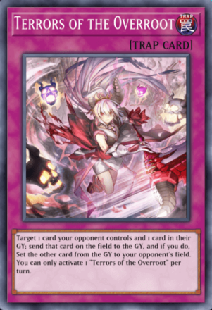
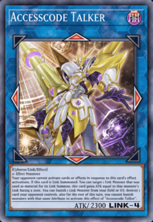

LES BASES DE YU-GI-OH !
LES CARTES MONSTRE
Les cartes Monstre sont de couleur jaune, orange, violette, blanche, bleue et noire. Elles sont à la base de tout duel et joueront un rôle primordial face à votre adversaire. Il existe de nombreux types de Monstres.
Certains sont très basiques et ne sont utilisés que pour leurs valeurs d'attaque (ATK) et de défense (DEF), ce sont les Monstres normaux. D'autres se révèleront parfois moins efficaces en combat mais auront des pouvoirs capables d'influencer grandement le cours de la partie, il s'agit des Monstres à Effet.
Chaque Monstre possède un attribut visible à droite de son nom. Certaines cartes n'affectent que les Monstres possédant un certain attribut. Le niveau d'un Monstre est représenté sous son nom par un nombre d'étoiles.
LES CARTES MAGIE
Les cartes Magie sont de couleur verte. Elles ne peuvent généralement être utilisées que pendant votre tour. Elles peuvent avoir des effets variés comme détruire une carte, renforcer vos Monstres ou encore vous aider à réaliser des invocations.
Il existe différents types de cartes Magie qui pourront avoir un effet unique ou un effet continu. Certaines pourront même être jouées pendant le tour de votre adversaire : ce sont les Magie Jeu-Rapide. Vous pourrez les jouer depuis votre main pendant n'importe laquelle de vos phases, ou alors les activer pendant le tour de n'importe quel joueur si vous les avez posées face verso sur le terrain au préalable.
Les différents types de cartes Magie sont reconnaissables au symbôle situé juste après la mention Carte Magie, sous le nom de la carte.
LES CARTES PIEGE
Les cartes Piège sont de couleur pourpre. Une fois posées sur le terrain, elles peuvent être activées pendant le tour de votre adversaire. Elles peuvent également avoir des effets variés mais contrairement aux cartes Magie elles sont plutôt jouées en réaction à votre adversaire pour le surprendre et contrarier ses plans. Vous pourrez souvent les activer une fois que votre adversaire aura réalisé une action spécifique.
LE TERRAIN DE JEU
Les zones Monstre Main : C'est ici que vous placez vos cartes Monstre une fois que vous les avez jouées. Vous ne pouvez avoir que 5 cartes Monstre en jeu au même moment
Les zones cartes Magie et Piège : Vous pouvez avoir jusqu'à 5 cartes Magie et/ou Piège dans cette zone. Vous ne pourrez pas jouer d'autres cartes de ce type si ces 5 emplacements sont occupés.
Le cimetière : C'est ici que sont placées vos cartes Monstre une fois détruites et vos cartes Magie et Piège une fois utilisées. Les 2 joueurs peuvent consulter à tout moment les cartes d'un cimetière. L'ordre des cartes du cimetière ne doit pas être modifié.
La zone du Deck : Placez ici votre Deck face verso et mélangé de manière aléatoire. C'est ici que vous piochez vos cartes.
La zone carte terrain : C'est l'emplacement réservé aux cartes Magie de Terrain. Vous ne pouvez avoir qu'une seule de ces cartes en jeu à tout moment. Chaque fois que vous en jouez une nouvelle, la précédente est détruite. Les cartes Magie de Terrain ne comptent pas dans la limite des 5 cartes de la zone Magie et Piège.
La zone Extra Deck : C'est l'emplacement de votre Extra Deck à partir duquel vous pourrez invoquer certaines cartes Monstre. Vous pouvez regarder son contenu à tout moment.
La zone bannie : Elle n'apparaît pas sur le plupart des tapis de jeu. Située à droite de votre cimetière, elle accueille les cartes qui ont été bannies par l'effet d'autres cartes. Généralement, vous ne pourrez plus réutiliser ces cartes au cours du Duel.
Les monstres Lien
Les Monstres Lien sont des monstres pouvant être invoqués depuis l’Extra Deck. Une Invocation Lien consiste à envoyer depuis le Terrain au Cimetière un certain nombre de monstres correspondant aux conditions d’invocation du Monstre Lien souhaité. Les Monstres Lien ne possèdent pas de points de Défense, ainsi ils ne peuvent qu'être en position d'attaque.
Condition d'invocation
Sur l'image, les conditions d'invocation du monstre sont indiquées en rouge.
La mention "2+ monstres" signifie qu'il faut au minimum 2 Monstres pour invoquer le Dragon Pare-Feu
L’effet d’un Monstre Lien est situé au même endroit que tous les autres monstres du jeu et se lit de la même manière.
À cela, se rajoute la Classification Lien du monstre (visible en bas à droite). Dragon Pare-Feu est un monstre dont la Classification Lien est de quatre (LINK - 4). Cela signifie qu'il faudra l'équivalent de 4 monstres pour l'invoquer (des exemples seront donnés par la suite pour mieux illustrer le propos).
Les Marqueurs
En jaune sur l'image, les marqueurs rouges sont les endroits où le Monstre Lien va "pointer". Les marqueurs noirs sont les endroits ou votre Monstre Lien ne pointe pas.
Une zone pointée par un Monstre Lien libère une zone dans laquelle vous pouvez invoquer un monstre depuis l'Extra Deck. Vous pouvez également utiliser les marqueurs des Monstres de l'adversaire qui pointent sur votre terrain pour vos propres invocations.
Sans Monstre Lien, il est seulement possible d'invoquer des Monstres de l'Extra Deck dans la zone qui leur est dédiée.
Les Monstres liens sont souvent des mechas ou des robots humanoides comme la fameuses série des carte "Bavard", mais il peut aussi y avoir des dragons comme la carte ci-dessus
Les decks utilisant des invocations liens sont des decks aggressifs car ces invocations n'ont pas de défense et utilisent beaucoup la mécanique de combo pour invoquer des Monstres assez puissants rapidement. Les decks Lien sont à première vue assez simple à comprendre mais demande une certaine compréhension des cartes et des effets pour être bien maîtrisé.
Les Monstres Pendule
Les Monstres Pendule sont un type de carte unique qui peut être joué soit comme un monstre, soit comme une Carte Magie dans la Zone Pendule. Ces cartes permettent des invocations spéciales massives depuis la main ou le Cimetière en utilisant les Échelles Pendule.
Condition d'invocation
Sur l'image, les conditions d'invocation du monstre sont indiquées en rouge.
Pour invoquer des Monstres Pendule, placez deux cartes Pendule dans les Zones Pendule. Les échelles de Pendule de ces cartes déterminent le niveau des monstres que vous pouvez invoquer.
Vous pouvez invoquer spécialement des monstres depuis votre main ou des monstres Pendule face recto dans votre Extra Deck, dont le niveau est compris entre les deux Échelles Pendule.
Les Echelles Pendule
En rouge sur l'image, les Échelles Pendule sont les nombres situés en bas des Zones Pendule de la carte. Ces échelles déterminent les niveaux des monstres que vous pouvez invoquer.
Par exemple, si vous avez une Échelle Pendule de 1 et une autre de 8, vous pouvez invoquer spécialement des monstres de niveau 2 à 7.
Les Monstres Pendule peuvent être utilisés soit comme monstres, soit comme Cartes Magie Pendule. Lorsqu'ils sont détruits, les Monstres Pendule sont placés face recto dans l'Extra Deck au lieu du Cimetière.
Vous pouvez utiliser les Échelles Pendule pour contrôler le flot de votre jeu et invoquer plusieurs monstres à la fois, créant des opportunités stratégiques variées.
Il existe des Monstre Pendule de tout type, mais la majorité des Monstres Pendule ont une forme humaine
Les decks utilisant des Monstres Pendule sont très complexe, dur à jouer et à mettre en place, surtout pour un joueur débutant. Cependant ils offrent un bon équilibre entre offense et défense en permettant à l'utilisateur d'invoquer beaucoup de monstres pendant un laps de temps très court, chacun avec sa particularité.
Les Monstres Fusion
Les Monstres Fusion sont invoqués en utilisant des cartes spécifiques appelées Cartes Magie de Fusion, ainsi que les Matériels de Fusion requis. Ces cartes sont généralement invoquées depuis l’Extra Deck en utilisant des monstres sur le terrain ou dans votre main.
Condition d'invocation
Sur l'image, les conditions d'invocation du monstre sont indiquées en rouge.
Pour invoquer un Monstre Fusion, vous devez avoir les Matériels de Fusion spécifiés sur la carte de Monstre Fusion ainsi qu'une Carte Magie de Fusion comme "Polymérisation".
Envoyez les Matériels de Fusion depuis votre main ou votre terrain au Cimetière, puis invoquez spécialement le Monstre Fusion depuis votre Extra Deck.
Les cartes Magie de Fusion
En jaune sur l'image, les cartes Magie de Fusion telles que "Polymérisation" sont utilisées pour combiner les Matériels de Fusion afin d'invoquer des Monstres Fusion. Certaines cartes Magie de Fusion peuvent avoir des effets supplémentaires, comme "Fusion Miracle" qui vous permet d'utiliser des Matériels de Fusion depuis votre Cimetière.
Vous pouvez également utiliser des cartes spécifiques à des archétypes, comme "Fusion Neos" pour les Monstres Fusion "Héros Élémentaire" ou "Fusion Red-Eyes" pour les Monstres Fusion "Yeux Rouges".
Les Monstres Fusion offrent des capacités puissantes et variées, souvent combinant les forces et les attributs de leurs Matériels de Fusion, rendant vos stratégies de duel plus polyvalentes.
Les Monstres Fusion sont principalement des dragons, mais ils peuvent être de tout type
Les decks utilisant des Monstres Fusion sont assez simple à jouer, ce sont des decks excellents pour des joueurs débutants. Ces type de decks sont souvent basés sur peu de cartes mais extrêment fortes autant offensivement que défensivement.